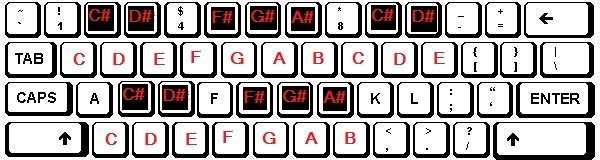

Quick guide to SYNTH64.
Synthesize up to 16 different sounds using either a tri-Oscillator, a noise generator, or use a sample. Add arpeggiator sequences, draw notes on the patterns and use an euclidian pattern. Then arrange those patterns in the sequencer form to make music and songs.
Bugs, help or comments are welcome at: ethan@basis64.nl
Quick tips:
- Presets are available for a quick start!
- Click knobs with the left mouse and drag up and down to change the value.
- Hold down shift to rotate knobs faster.
- Click the stop button to stop all sound.
- Scrolling the mousewheel when the cursor is on the titlebar of the pattern
or sequencer form changes the selected pattern.
- Right mouse click on the Sound button shows the menu.
- Hold down a key on the keyboard or MIDI input to fill patterns with a specific note.
- Select the right play mode. Pattern mode plays the current pattern, Song mode plays everything listed in the sequencer form.
- Use the computer 'typing' keyboard to play notes.
- Both midi input and the typing keyboard can be used to play notes into the pianoroll.
- Recording: use Audacity to record the speakers. Open SYNTH64 in a incognito window, load the project, deselect repeat and click play. Minimize all the windows.
Semi
polyphonic.
The sounds are meant to be a single instrument. But if the oscillator is selected as the sound source, you are able to play three note chords. The lowest note is played by the first oscillator, the middle by the second and the highest note is played by the thirds oscillator.
This is not a perfect technique, but it does work. With the stum chords knob you can set a delay between chord notes, so it sounds like a rolling chord.
Euclidian patterns.
Euclidian patterns are patterns of a given lengths, with an amount of hits divided as evenly as possible.
You can set an euclidian pattern by clicking the right mouse button on the sound button and selecting euclidian generator. There you can change the length of the pattern, the amount of hits and the note of the hit (this will also be the base note of the arpeggiator, if activated).
The euclidian patterns don't conform to the 64 step sequencer, they continue their own loop (the length of the pattern). They only return to their zeropoint when it is not played in the previous sequence column.
Custom waveforms.
When you select a custom waveform for an oscillator or a LFO, you can draw a single period waveform.
Area selection in the piano roll and sequencer form.
You can select multiple notes or patterns by area selection. Hold down the shift key and click and drag the mouse (from upper left to lower right of the area) to select an area. Once selected you can let go of the shift key.
- Left mouse click inside the area and dragging moves the selection around.
- Right mouse click inside the area pastes the selection.
- Left mouse click outside the area pastes the selection and unselects it.
- The delete key removes the selection.
Computer 'typing' keyboard.
You can use your keyboard to play notes.
;
Arpeggiator (arp).
In the FX section of the sound form you will find an arpeggiator element. You can turn it on and then put a note sequence into it by typing on the computer keyboard, or via a midi input device. Be mindfull, if the sound form is displayed, all next keypresses will be sent into the arpeggiator.
You draw 'hits' in the piano roll or use an euclidian pattern. The pitch of the hits is the start pitch of the sequence. Subsequential hits of the same pitch progresses the sequence. If a hit is placed with a different pitch, the sequence will start a zero again.
For example:
- The sequence "C3, E3, G3" on hits "C3, C3, C3" will sound like "C3, E3, G3".
- The same sequence on the hits "D3, D3, D3" will sound like "D3, F#3, A3".
- The same sequence on the hits "D3, F3, A3" will sound like "D3, F3, A3". (that's a little trick to get around major/minor difference).
Right click with the mouse on the button the show the menu;
- remove all, to remove the entire sequence.
- remove current, to remove the current selected note.
- remove last, to remove the last note.
- Change a specific note by turning the knob to the desired note and press a new note. It will replace the old note.(the last note has to be removed, otherwise it adds it to the end).
Arp options;
- Ascending/Descending, the direction of the sequence.
- +return, the arpeggiator returns to zero at the start of a new pattern.
- +opposite, switches between ascending/descending on the start/end of the sequence.
- +random, picks a random length of the part of the sequence to play.
Filter.
You can use the filter to filter out, amplify or cut off filter of a sound. There are three knobs for the filter frequency, the resonance and the gain.The link selector links the filter frequency to the frequency of the played note plus the value of the filter frequency knob to it.
- LP stands for low pass. It passes the frequencies below the filter frequency.
- HP stands for high pass. It passes the frequencies above the filter frequency.
- BP stands for band pass. It passes the frequencies around the filter frequency, the width of the band is determined by the resonance.
- LS stands for low shelf. It amplifies the frequencies below the filter frequency by the gain value.
- HS stands for high shelf. It amplifies the frequencies above the filter frequency by the gain value.
- PEAK stands for peaking. It amplifies a band of frequencies around the filter frequency by gain. The band width is determined by the resonance.
- NOTCH stands for notch. It removes the frequencies around the filter frequency, the width of the band is determined by the resonance.
- ALL stands for all pass. It lets all frequencies through, but the harmonics are changed.
Sound form.
You can select one of three audio sources per sound. A tri
oscillator (an oscillator merged from 3 oscillators), a noise generator, or a sample.
- Sample: Load a sample. Samples smaller of size are better to work with. The sampler assumes the samples are tuned to C4. You can always tune your sample. You can set a start and end point, and if it should be played once, or in a loop.
- Noise generator: Select white, brown or pink noise.
- tri-Oscillator: You have three oscillators at your disposal to create a rich sound. Starting with a basic waveform, or a custom one, you can manipulate it into something that sounds nice.
FX:
- The distortion can be used to evoke a little bit more harmonics out of a sound, or to make it sound very growly.
- The delay can be used to add a decaying echo. If you set the delay time very low and turn the delay feedback up you can mimic a reverb a little bit. (There is no reverb because they are really expensive audio
synthesis
wise).
ADSR Envelope:
Use the attack, decay, sustain and release knobs (adsr) to change the length of the envelope. You can pretty easily see what it does by looking at the graph. The attack
level determines the intensity of the attack and the release
level determines the volume after the sound is played.
The expo button adds an exponential curve to the envelope, making it rise and fall with a curve.
The chance knob determines the change of the current note in a pattern being played. For example; when the value is 0.8, there is an 80% chance of the note being played. With this you can create some pretty irratic and random patterns.
- Sound envelope: This defines the intensity and length of the sound.
- Filter envelope: this determines how much of the original sound gets through the filter.
LFO's:
The Low Frequency Oscillators can be connected to the filter, the frequency of individual oscillators, the mix (between osc 1 and osc 2), amplitude, panning and the frequency and amount of the other lfo.
The link selector resets the LFO every time a note is played.